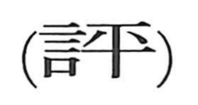

評

Kun: | On: hyo
criticism ・ comment ・ evaluation ・ appraisal
Explanation
A phono-semantic character: the semantic element 言 points to speech and deliberation, while the phonetic 平 supplies the sound and a key idea. In its ancient form, 平 depicts chips of wood spread to either side as a plank is leveled with a hand adze, hence “flat, even, equal”—a sense recorded in early glosses. From this notion of evenness comes fairness and impartiality. 評 thus denotes public consultation and discussion carried out fairly: conferring together, weighing and estimating value or price, and rendering judicious assessments.